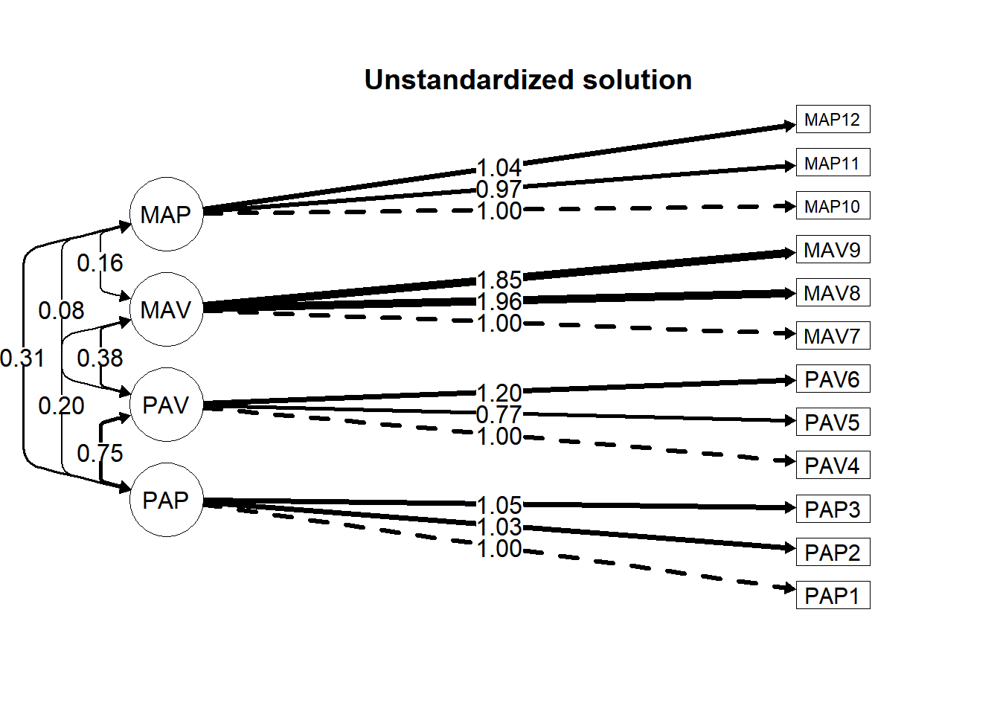

21 Fitting a CFA model
Before we fit the CFA model using the lavaan package, we need to provide the CFA model specification. We are specifying four factors, which we’re naming PAP, PAV, MAV, and MAP. We indicate which variables load on which factor with the =~ operator in lavaan’s language. The default is to set each factor’s metric to be on the scale of its first variable.
library(lavaan)
mymod <- "PAP =~ PAP1 + PAP2 + PAP3
PAV =~ PAV4 + PAV5 + PAV6
MAV =~ MAV7 + MAV8 + MAV9
MAP =~ MAP10 + MAP11 + MAP12"Now that we have the model specification saved to our mymod object, we can fit the model to our data using the cfa() function. The first argument is the model specification. In the data = argument, we include the raw data set. We use the estimator = "MLR" to specify the robust maximum likelihood estimation method. We can use the mimic = "Mplus" argument if we wish to acquire output that is similar to what it would be if we were to use Mplus software.
At this point, we should look at whether there were any errors when we attempt to fit the model. For instance, if we get a warning that says The variance-covariance matrix of the estimated parameters (vcov) does not appear to be positive definite! there is something wrong with our model specification. More than likely, our model is underidentified and we need to go back to our specification.
If we did not have access to the raw data but only had the covariance matrix, S, we can include the sample.cov = argument in place of the data = argument. We also need to specify the number of persons, which here we’ll assign to the object n_p, which is 1022.64
S <- cov(dat)
n_p <- nrow(dat)
cfa_fit_S <- cfa(mymod,
sample.cov = S,
sample.nobs = n_p,
mimic = "Mplus")We will use the earlier specification, with the raw data and the robust estimation. We can use the summary() function on our object that contains the CFA result. We can also ask for the fit indices, standardized coefficients, and the r-square of the loadings using these respective three arguments.
## lavaan 0.6-19 ended normally after 46 iterations
##
## Estimator ML
## Optimization method NLMINB
## Number of model parameters 42
##
## Number of observations 1022
## Number of missing patterns 1
##
## Model Test User Model:
## Standard Scaled
## Test Statistic 283.977 260.087
## Degrees of freedom 48 48
## P-value (Chi-square) 0.000 0.000
## Scaling correction factor 1.092
## Yuan-Bentler correction (Mplus variant)
##
## Model Test Baseline Model:
##
## Test statistic 4421.866 3657.087
## Degrees of freedom 66 66
## P-value 0.000 0.000
## Scaling correction factor 1.209
##
## User Model versus Baseline Model:
##
## Comparative Fit Index (CFI) 0.946 0.941
## Tucker-Lewis Index (TLI) 0.926 0.919
##
## Robust Comparative Fit Index (CFI) 0.947
## Robust Tucker-Lewis Index (TLI) 0.927
##
## Loglikelihood and Information Criteria:
##
## Loglikelihood user model (H0) -20006.917 -20006.917
## Scaling correction factor 1.227
## for the MLR correction
## Loglikelihood unrestricted model (H1) -19864.929 -19864.929
## Scaling correction factor 1.155
## for the MLR correction
##
## Akaike (AIC) 40097.835 40097.835
## Bayesian (BIC) 40304.875 40304.875
## Sample-size adjusted Bayesian (SABIC) 40171.478 40171.478
##
## Root Mean Square Error of Approximation:
##
## RMSEA 0.069 0.066
## 90 Percent confidence interval - lower 0.062 0.058
## 90 Percent confidence interval - upper 0.077 0.073
## P-value H_0: RMSEA <= 0.050 0.000 0.000
## P-value H_0: RMSEA >= 0.080 0.013 0.001
##
## Robust RMSEA 0.069
## 90 Percent confidence interval - lower 0.061
## 90 Percent confidence interval - upper 0.077
## P-value H_0: Robust RMSEA <= 0.050 0.000
## P-value H_0: Robust RMSEA >= 0.080 0.012
##
## Standardized Root Mean Square Residual:
##
## SRMR 0.046 0.046
##
## Parameter Estimates:
##
## Standard errors Sandwich
## Information bread Observed
## Observed information based on Hessian
##
## Latent Variables:
## Estimate Std.Err z-value P(>|z|) Std.lv Std.all
## PAP =~
## PAP1 1.000 1.255 0.812
## PAP2 1.035 0.037 28.243 0.000 1.298 0.850
## PAP3 1.052 0.038 27.683 0.000 1.320 0.850
## PAV =~
## PAV4 1.000 1.144 0.591
## PAV5 0.772 0.062 12.356 0.000 0.884 0.526
## PAV6 1.195 0.082 14.615 0.000 1.368 0.797
## MAV =~
## MAV7 1.000 0.657 0.462
## MAV8 1.956 0.169 11.600 0.000 1.285 0.855
## MAV9 1.845 0.160 11.547 0.000 1.212 0.756
## MAP =~
## MAP10 1.000 0.814 0.691
## MAP11 0.974 0.056 17.430 0.000 0.793 0.811
## MAP12 1.041 0.066 15.885 0.000 0.847 0.708
##
## Covariances:
## Estimate Std.Err z-value P(>|z|) Std.lv Std.all
## PAP ~~
## PAV 0.751 0.074 10.112 0.000 0.523 0.523
## MAV 0.197 0.038 5.123 0.000 0.238 0.238
## MAP 0.308 0.046 6.719 0.000 0.301 0.301
## PAV ~~
## MAV 0.378 0.056 6.693 0.000 0.502 0.502
## MAP 0.080 0.038 2.133 0.033 0.086 0.086
## MAV ~~
## MAP 0.159 0.024 6.558 0.000 0.297 0.297
##
## Intercepts:
## Estimate Std.Err z-value P(>|z|) Std.lv Std.all
## .PAP1 5.155 0.048 106.570 0.000 5.155 3.334
## .PAP2 5.201 0.048 108.813 0.000 5.201 3.404
## .PAP3 4.915 0.049 101.118 0.000 4.915 3.163
## .PAV4 4.860 0.061 80.186 0.000 4.860 2.508
## .PAV5 4.713 0.053 89.744 0.000 4.713 2.807
## .PAV6 4.192 0.054 78.131 0.000 4.192 2.444
## .MAV7 5.103 0.045 114.616 0.000 5.103 3.585
## .MAV8 4.135 0.047 87.939 0.000 4.135 2.751
## .MAV9 3.890 0.050 77.534 0.000 3.890 2.425
## .MAP10 5.756 0.037 156.210 0.000 5.756 4.886
## .MAP11 6.209 0.031 203.007 0.000 6.209 6.350
## .MAP12 5.889 0.037 157.389 0.000 5.889 4.923
##
## Variances:
## Estimate Std.Err z-value P(>|z|) Std.lv Std.all
## .PAP1 0.816 0.063 12.990 0.000 0.816 0.341
## .PAP2 0.649 0.068 9.558 0.000 0.649 0.278
## .PAP3 0.671 0.079 8.483 0.000 0.671 0.278
## .PAV4 2.445 0.153 15.983 0.000 2.445 0.651
## .PAV5 2.038 0.116 17.564 0.000 2.038 0.723
## .PAV6 1.071 0.139 7.692 0.000 1.071 0.364
## .MAV7 1.594 0.081 19.625 0.000 1.594 0.787
## .MAV8 0.609 0.085 7.123 0.000 0.609 0.269
## .MAV9 1.104 0.100 11.048 0.000 1.104 0.429
## .MAP10 0.725 0.062 11.609 0.000 0.725 0.522
## .MAP11 0.327 0.033 9.775 0.000 0.327 0.342
## .MAP12 0.713 0.057 12.606 0.000 0.713 0.498
## PAP 1.575 0.114 13.872 0.000 1.000 1.000
## PAV 1.310 0.148 8.832 0.000 1.000 1.000
## MAV 0.432 0.070 6.200 0.000 1.000 1.000
## MAP 0.663 0.067 9.850 0.000 1.000 1.000
##
## R-Square:
## Estimate
## PAP1 0.659
## PAP2 0.722
## PAP3 0.722
## PAV4 0.349
## PAV5 0.277
## PAV6 0.636
## MAV7 0.213
## MAV8 0.731
## MAV9 0.571
## MAP10 0.478
## MAP11 0.658
## MAP12 0.50221.1 Making sure the model was correctly estimated
The first place our eyes should go in the output is the first line. With luck, it will report that lavaan ended normally after some number of iterations. Our output suggests the model ended normally, so we are in good shape.
We should then make sure the model included all of our data by seeing if the Number of observations is what we expect it to be, which it is in this case (1022).
Additionally, we should be sure that the number of parameters is what we expect. We see that there are 42 parameters, which is what we expect if we include the means of the items. This is because there are 8 pattern coefficients, 12 item error variances, 4 factor variances, and 6 factor covariances, as well as 12 item means, the latter of which is excluded from our calculation of the degrees of freedom. The degrees of freedom is the number unique cells in the sample covariance matrix minus the number of parameters. The number of unique cells is \(\frac{\nu(\nu + 1)}{2} = 78\), where \(\nu\) is the number of variables (i.e., the 12 items). The number of parameters excluding the item means is \(30\), making our degrees of freedom \(48\).
21.2 Evaluating the model fit
We can proceed to look at the model fit and parameter estimates. Looking at the fit statistics, we see there is some degree of mispecification in this model. Because we used robust estimation, we read the indices under the Robust column in the output. The chi-square fit index of \(260.087\), with its \(48\) degrees of freedom, suggests the model does not fit. The global fit indexes are borderline okay. Neither the comparative fit index, \(0.947\), nor the root mean square error of approximation, \(0.069\), exceed the traditional criteria for “good” fit (CFI \(\ge .95\) and RMSEA \(\le .06\)) but they are close. The standardized root mean square residual of \(0.046\) does meet the criterion (SRMR \(\le .08\)).
If we seek to save these fit indexes to an object, we can use the fitMeasures() function. These have .scaled and .robust suffixes because we used robust maximum likelihood as the estimation method. If we simply used estimator = "ML", which is the default, we would remove those suffixes.
fit_stats <- fitMeasures(cfa_fit, c("chisq.scaled","df.scaled", "pvalue.scaled",
"cfi.robust",
"tli.robust",
"rmsea.robust",
"srmr"))
fit_stats## chisq.scaled df.scaled pvalue.scaled cfi.robust tli.robust rmsea.robust srmr
## 260.087 48.000 0.000 0.947 0.927 0.069 0.04621.3 Interpretting the parameter estimates
Looking back at the main output, we see that the unstandardized parameter estimates are in the Estimate column. The first pattern coefficient for each factor is \(1.00\). This is because the default specification is to fix the first variable to be the reference variable, thereby setting the metric of the factor to be the same as that variable. The other coefficients on that factor are interpreted as their expected change in their units based on a one-unit change in the factor, where that unit is the same as that of the reference variable.
In the covariances section, we see the covariances among the factors. The standardized column shows the correlations among the factors. We see that these are all statistically significant and that the correlation between PAV and MAP is the weakest. We might want to evaluate the degree to which these results are consistent with our theory about the strength and direction of these latent-variable relationships.
In the variances section of the output, we see that the variances of the factors are in the units of their first loading manifest variables. For example, the variance of the first factor is \(1.575\). In this section of the output, we also see the variances of the manifest variables (i.e., the observed variables that the factors predict). These are the error (or residual) variances.
In the intercepts section, we see the estimates of the means of each manifest variable and factor. We can see that the factors are centered around zero. In evaluating the fit of the CFA model, we are not usually interested in this section.
For all of the parameter estimates, there are versions of their estimates in a completely standardized model, in the Std.all column. The observed variables and the factors are scaled as z-scores. In interpreting the first item’s standardized pattern coefficient, \(\lambda_{1,1}\), we can say that the expected amount of change is \(0.812\) standard-deviation units for each \(1\) standard-deviation unit change in the factor score. With this particular model, the \(R^2\) estimates of the observed variables are the same as the squared standardized loadings. For instance, \(\lambda_{1,1}^2 = R_{\text{PAP}1}^2 = 0.659\). And, as mentioned in the covariances section, any standardized covariances are interpreted as correlations.
The Std.lv column includes the estimates when the factors (the latent variables) are standardized but the observed variables are not. These pattern coefficients are interpreted as changes in the observed variable, on its original scale, for each \(1\) standard-deviation unit change in the factor score.
21.4 Further inspecting our model
21.4.1 Looking at the model’s covariance matrices
There are several covariances. In addition to the sample covariance matrix from the raw data \((\text{S})\), there is the model-implied covariance matrix \((\Sigma({\hat{\theta}}))\), the residual covariance matrix \((\Theta_{\delta})\), and the standardized residual covariance matrix.
We can get the model-implied covariance matrix from the fitted output using the fitted() function. We can isolate the covariance by attaching $cov to this object.
## PAP1 PAP2 PAP3 PAV4 PAV5 PAV6 MAV7 MAV8 MAV9 MAP10 MAP11 MAP12
## PAP1 2.391
## PAP2 1.629 2.335
## PAP3 1.657 1.715 2.414
## PAV4 0.751 0.777 0.790 3.754
## PAV5 0.580 0.600 0.610 1.011 2.819
## PAV6 0.897 0.928 0.944 1.565 1.209 2.942
## MAV7 0.197 0.203 0.207 0.378 0.292 0.451 2.026
## MAV8 0.384 0.398 0.404 0.739 0.570 0.883 0.844 2.260
## MAV9 0.363 0.375 0.382 0.697 0.538 0.833 0.796 1.558 2.573
## MAP10 0.308 0.319 0.324 0.080 0.062 0.096 0.159 0.311 0.293 1.388
## MAP11 0.300 0.310 0.316 0.078 0.060 0.093 0.155 0.303 0.286 0.646 0.956
## MAP12 0.320 0.332 0.337 0.083 0.064 0.100 0.165 0.323 0.305 0.690 0.672 1.431This seems to be similar to the sample covariance matrix, \(\text{S}\).
## PAP1 PAP2 PAP3 PAV4 PAV5 PAV6 MAV7 MAV8 MAV9 MAP10 MAP11 MAP12
## PAP1 2.391
## PAP2 1.629 2.335
## PAP3 1.687 1.691 2.414
## PAV4 0.497 0.726 0.567 3.754
## PAV5 0.424 0.637 0.466 1.236 2.819
## PAV6 0.778 1.103 1.109 1.602 1.086 2.942
## MAV7 -0.087 0.148 0.046 0.626 0.784 0.581 2.026
## MAV8 0.331 0.487 0.507 0.635 0.707 0.837 0.827 2.260
## MAV9 0.194 0.356 0.408 0.369 0.685 0.829 0.764 1.571 2.573
## MAP10 0.509 0.458 0.409 0.089 0.131 0.120 0.031 0.270 0.243 1.388
## MAP11 0.275 0.302 0.283 0.022 -0.012 0.086 0.072 0.297 0.278 0.643 0.956
## MAP12 0.207 0.281 0.237 0.067 0.042 0.172 0.272 0.397 0.393 0.680 0.679 1.431The discrepancy between \(\Sigma({\hat{\theta}})\) and \(\text{S}\) is the residual matrix. This discrepancy is the basis for the fit statistics. We can calculate it as S_sample - Sigma_theta given the objects we just created. Alternatively, we can get \(\Theta_{\delta}\) using the resid() function:
## $type
## [1] "raw"
##
## $cov
## PAP1 PAP2 PAP3 PAV4 PAV5 PAV6 MAV7 MAV8 MAV9 MAP10 MAP11 MAP12
## PAP1 0.000
## PAP2 0.000 0.000
## PAP3 0.030 -0.023 0.000
## PAV4 -0.253 -0.051 -0.222 0.000
## PAV5 -0.156 0.037 -0.144 0.224 0.000
## PAV6 -0.119 0.175 0.165 0.037 -0.122 0.000
## MAV7 -0.284 -0.056 -0.161 0.248 0.492 0.130 0.000
## MAV8 -0.053 0.089 0.102 -0.103 0.137 -0.046 -0.017 0.000
## MAV9 -0.169 -0.020 0.026 -0.328 0.147 -0.004 -0.033 0.013 0.000
## MAP10 0.201 0.139 0.085 0.009 0.069 0.024 -0.128 -0.041 -0.050 0.000
## MAP11 -0.025 -0.008 -0.033 -0.056 -0.073 -0.007 -0.082 -0.006 -0.007 -0.003 0.000
## MAP12 -0.114 -0.050 -0.100 -0.017 -0.023 0.072 0.106 0.073 0.088 -0.009 0.007 0.000
##
## $mean
## PAP1 PAP2 PAP3 PAV4 PAV5 PAV6 MAV7 MAV8 MAV9 MAP10 MAP11 MAP12
## 0 0 0 0 0 0 0 0 0 0 0 0Finally, if we need access to the standardized residuals, we can use the resid() function with the type = "standardized":
## $type
## [1] "standardized"
##
## $cov
## PAP1 PAP2 PAP3 PAV4 PAV5 PAV6 MAV7 MAV8 MAV9 MAP10 MAP11 MAP12
## PAP1 0.000
## PAP2 0.001 0.000
## PAP3 1.010 -0.926 0.000
## PAV4 -3.637 -0.767 -3.379 0.000
## PAV5 -2.247 0.600 -2.190 2.907 0.000
## PAV6 -2.613 3.469 3.507 1.055 -3.494 0.000
## MAV7 -4.237 -0.861 -2.424 2.911 6.958 1.867 0.000
## MAV8 -1.247 2.349 2.468 -1.831 2.123 -1.247 -0.669 0.000
## MAV9 -2.957 -0.368 0.467 -5.143 2.089 -0.075 -1.021 0.593 0.000
## MAP10 4.720 3.313 1.945 0.152 1.237 0.539 -2.591 -1.167 -1.125 0.000
## MAP11 -0.844 -0.287 -1.181 -1.275 -1.691 -0.242 -2.078 -0.269 -0.235 -0.354 0.000
## MAP12 -2.560 -1.202 -2.456 -0.264 -0.391 1.654 2.145 2.186 2.250 -0.857 1.089 0.000
##
## $mean
## PAP1 PAP2 PAP3 PAV4 PAV5 PAV6 MAV7 MAV8 MAV9 MAP10 MAP11 MAP12
## 0 0 0 0 0 0 0 0 0 0 0 0Because these are in z-score units, those standardized errors that are greater in absolute value than 2 are unexpected if the model has good fit. Although these can be inflated because of small standard deviations, some of the larger estimates are worth looking into. For example, with PAV5 and PAV7 there’s a z-score of 6.96, which is pretty big. It is a positive value indicating that the model-implied covariance (\(0.292\)) underestimated the covariance between these two variables.
21.5 Further inspecting our model’s parameters
21.5.1 Seeing which parameters were estimated
Sometimes, we want to see what all of the estimated parameters are in the model. We can use the inspect() function on our model’s output. This will report which parameters are estimated and enumerate them (from 1 up to 42 in our model). By default, some parameters are fixed and others are estimated. For example, with our specification, each factor’s first observed variable’s loading is not estimated because it is fixed to 1 in order to place the factor on a scale. We can see this in the $lambda part of the output, where those parameters are not enumerated but are instead marked as 0, indicating they were not estimated.
## $lambda
## PAP PAV MAV MAP
## PAP1 0 0 0 0
## PAP2 1 0 0 0
## PAP3 2 0 0 0
## PAV4 0 0 0 0
## PAV5 0 3 0 0
## PAV6 0 4 0 0
## MAV7 0 0 0 0
## MAV8 0 0 5 0
## MAV9 0 0 6 0
## MAP10 0 0 0 0
## MAP11 0 0 0 7
## MAP12 0 0 0 8
##
## $theta
## PAP1 PAP2 PAP3 PAV4 PAV5 PAV6 MAV7 MAV8 MAV9 MAP10 MAP11 MAP12
## PAP1 9
## PAP2 0 10
## PAP3 0 0 11
## PAV4 0 0 0 12
## PAV5 0 0 0 0 13
## PAV6 0 0 0 0 0 14
## MAV7 0 0 0 0 0 0 15
## MAV8 0 0 0 0 0 0 0 16
## MAV9 0 0 0 0 0 0 0 0 17
## MAP10 0 0 0 0 0 0 0 0 0 18
## MAP11 0 0 0 0 0 0 0 0 0 0 19
## MAP12 0 0 0 0 0 0 0 0 0 0 0 20
##
## $psi
## PAP PAV MAV MAP
## PAP 21
## PAV 25 22
## MAV 26 28 23
## MAP 27 29 30 24
##
## $nu
## intrcp
## PAP1 31
## PAP2 32
## PAP3 33
## PAV4 34
## PAV5 35
## PAV6 36
## MAV7 37
## MAV8 38
## MAV9 39
## MAP10 40
## MAP11 41
## MAP12 42
##
## $alpha
## intrcp
## PAP 0
## PAV 0
## MAV 0
## MAP 0We also see in the $theta portion of the output that all of the variances in the \(\Theta_{\delta}\) matrix are estimated whereas none of the covariances is. The parameters in the $psi part of the output are the estimated variances and covariances among the factors.65 By default, these are all estimated.66
21.5.2 Optional: Saving parameter estimates to a data frame
Though we can see the parameter estimates in the model output, we can also get them in data-frame format. This is convenient if we wish to save them to a data frame or export them to a CSV file. We see there are three operators here. We used the =~ in our model specification to refer to the factor-item loadings. The ~~ refers to variances and covariances, and the ~1 refers to the intercepts, which we can interpret in this model as the means. The lhs and rhs are the left and right hand sides of the operator, which we can use to filter which parameters we would like to deal with from the resulting data frame (as we do below).
## lhs op rhs est se z pvalue ci.lower ci.upper
## 1 PAP =~ PAP1 1.000 0.000 NA NA 1.000 1.000
## 2 PAP =~ PAP2 1.035 0.037 28.243 0.000 0.963 1.106
## 3 PAP =~ PAP3 1.052 0.038 27.683 0.000 0.978 1.127
## 4 PAV =~ PAV4 1.000 0.000 NA NA 1.000 1.000
## 5 PAV =~ PAV5 0.772 0.062 12.356 0.000 0.650 0.895
## 6 PAV =~ PAV6 1.195 0.082 14.615 0.000 1.035 1.355
## 7 MAV =~ MAV7 1.000 0.000 NA NA 1.000 1.000
## 8 MAV =~ MAV8 1.956 0.169 11.600 0.000 1.625 2.286
## 9 MAV =~ MAV9 1.845 0.160 11.547 0.000 1.532 2.158
## 10 MAP =~ MAP10 1.000 0.000 NA NA 1.000 1.000
## 11 MAP =~ MAP11 0.974 0.056 17.430 0.000 0.865 1.084
## 12 MAP =~ MAP12 1.041 0.066 15.885 0.000 0.912 1.169
## 13 PAP1 ~~ PAP1 0.816 0.063 12.990 0.000 0.693 0.939
## 14 PAP2 ~~ PAP2 0.649 0.068 9.558 0.000 0.516 0.782
## 15 PAP3 ~~ PAP3 0.671 0.079 8.483 0.000 0.516 0.826
## 16 PAV4 ~~ PAV4 2.445 0.153 15.983 0.000 2.145 2.744
## 17 PAV5 ~~ PAV5 2.038 0.116 17.564 0.000 1.811 2.265
## 18 PAV6 ~~ PAV6 1.071 0.139 7.692 0.000 0.798 1.344
## 19 MAV7 ~~ MAV7 1.594 0.081 19.625 0.000 1.435 1.753
## 20 MAV8 ~~ MAV8 0.609 0.085 7.123 0.000 0.441 0.776
## 21 MAV9 ~~ MAV9 1.104 0.100 11.048 0.000 0.908 1.299
## 22 MAP10 ~~ MAP10 0.725 0.062 11.609 0.000 0.603 0.847
## 23 MAP11 ~~ MAP11 0.327 0.033 9.775 0.000 0.262 0.393
## 24 MAP12 ~~ MAP12 0.713 0.057 12.606 0.000 0.602 0.824
## 25 PAP ~~ PAP 1.575 0.114 13.872 0.000 1.352 1.797
## 26 PAV ~~ PAV 1.310 0.148 8.832 0.000 1.019 1.600
## 27 MAV ~~ MAV 0.432 0.070 6.200 0.000 0.295 0.568
## 28 MAP ~~ MAP 0.663 0.067 9.850 0.000 0.531 0.795
## 29 PAP ~~ PAV 0.751 0.074 10.112 0.000 0.605 0.896
## 30 PAP ~~ MAV 0.197 0.038 5.123 0.000 0.121 0.272
## 31 PAP ~~ MAP 0.308 0.046 6.719 0.000 0.218 0.398
## 32 PAV ~~ MAV 0.378 0.056 6.693 0.000 0.267 0.488
## 33 PAV ~~ MAP 0.080 0.038 2.133 0.033 0.007 0.154
## 34 MAV ~~ MAP 0.159 0.024 6.558 0.000 0.111 0.206
## 35 PAP1 ~1 5.155 0.048 106.570 0.000 5.060 5.249
## 36 PAP2 ~1 5.201 0.048 108.813 0.000 5.107 5.294
## 37 PAP3 ~1 4.915 0.049 101.118 0.000 4.820 5.010
## 38 PAV4 ~1 4.860 0.061 80.186 0.000 4.741 4.979
## 39 PAV5 ~1 4.713 0.053 89.744 0.000 4.610 4.816
## 40 PAV6 ~1 4.192 0.054 78.131 0.000 4.087 4.297
## 41 MAV7 ~1 5.103 0.045 114.616 0.000 5.015 5.190
## 42 MAV8 ~1 4.135 0.047 87.939 0.000 4.043 4.227
## 43 MAV9 ~1 3.890 0.050 77.534 0.000 3.792 3.989
## 44 MAP10 ~1 5.756 0.037 156.210 0.000 5.684 5.829
## 45 MAP11 ~1 6.209 0.031 203.007 0.000 6.149 6.269
## 46 MAP12 ~1 5.889 0.037 157.389 0.000 5.816 5.963
## 47 PAP ~1 0.000 0.000 NA NA 0.000 0.000
## 48 PAV ~1 0.000 0.000 NA NA 0.000 0.000
## 49 MAV ~1 0.000 0.000 NA NA 0.000 0.000
## 50 MAP ~1 0.000 0.000 NA NA 0.000 0.00021.5.3 Generating path diagrams
The semPlot package (R-semPlot?) provides a function for plotting the output from lavaan’s CFA() function. We can generate the standardized and unstandardized solutions.67 There are several arguments available, which are described in the help files.
semPlot::semPaths(cfa_fit, what = "est", intercept = FALSE,
rotation = 2, fade = F, edge.color = "black",
curvePivot = T, sizeMan = 8, residuals = F, curvature = 2.5,
title = FALSE, sizeMan2 = 3, sizeLat2 = 8,
label.cex = 1, edge.label.cex = 1.2)
title("Unstandardized solution", line = 1)
The dotted line indicates the path coefficient was not estimated because the factor was scaled to that item. We could specify the model with factor variances scaled to 1 and generate a new path model.
21.5.4 Examining modification indices
Notice that if we permitted the errors to correlate between PAV5 and MAV7, we would improve our chi-square by 40.375. The estimated parameter change (epc) is 0.386, which is what the error covariance is estimated to be if we permitted this to be estimated in the model.
Mod_inds <- modindices(cfa_fit,
standardized = TRUE,
minimum.value = 3.84,
sort. = TRUE)
Mod_inds[1:10, ]## lhs op rhs mi epc sepc.lv sepc.all sepc.nox
## 126 PAV5 ~~ MAV7 40.375 0.386 0.386 0.214 0.214
## 125 PAV5 ~~ PAV6 33.826 -0.591 -0.591 -0.400 -0.400
## 60 PAV =~ PAP1 30.608 -0.235 -0.269 -0.174 -0.174
## 121 PAV4 ~~ MAV9 23.206 -0.310 -0.310 -0.189 -0.189
## 53 PAP =~ PAV6 22.759 0.326 0.409 0.239 0.239
## 57 PAP =~ MAP10 20.215 0.126 0.158 0.135 0.135
## 98 PAP2 ~~ PAP3 19.871 -0.363 -0.363 -0.551 -0.551
## 95 PAP1 ~~ MAP10 19.295 0.133 0.133 0.174 0.174
## 88 PAP1 ~~ PAP3 17.587 0.311 0.311 0.420 0.420
## 117 PAV4 ~~ PAV5 17.394 0.378 0.378 0.169 0.169Because we used the sort. = TRUE argument, the parameters are ranked by modification index. We asked for only the first 10, though there seem to be many more. The ~~ symbolizes covariance; the =~ symbolizes the loading of an observed variable on a factor. With our current specification, the model is particularly failing to account for error covariances between PAV5 and two other items, MAV7 and PAV6. There also seems to be some unexpected relationship between PAP1 and the PAV factor that the model is failing to account for. There are several other sources of variance that seem to explain our model’s lack of fit. These modification indices are useful for understanding the sources of misfit in our model and might be used to critique the current model’s application to real data.
The
estimator = "MLR"specification does not work with covariance data. This means that if we use the covariance matrix as the input, we assume the data are multivariate normal.↩︎Because our factors are predictors of the observed variables, we can call this a phi matrix even though it is listed as psi.↩︎
If you’re curious, the
$nu\((\nu)\) portion shows that the model also estimates the intercept of each of the variables, which we can think of as their means and which can be interpreted as the average facility to endorse each item. These are sometimes called tau \((\tau)\) parameters. In item-response theory these are essentially item difficulty parameters. The$alpha\((\alpha)\) intercepts are fixed to zero by default. In most models, these are the factor means. We see that altogether we have 42 parameters being estimated, which we saw in our original output fromsummary(cfa_fit). We can also remember that when we estimate the model-implied covariance \((\Sigma({\hat{\theta}}))\), we are not estimating the items’ means, so we do not include the number of \(\nu\) estimates when we consider the model’s degrees of freedom \((\frac{\nu(\nu + 1)}{2} - \text{number of parameters} = 78 - 30 = 48)\).↩︎For standardized parameters, include
what = "std".↩︎